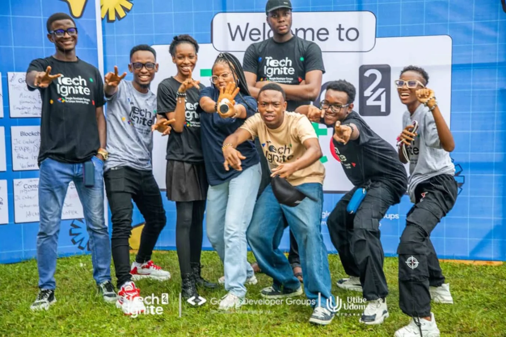
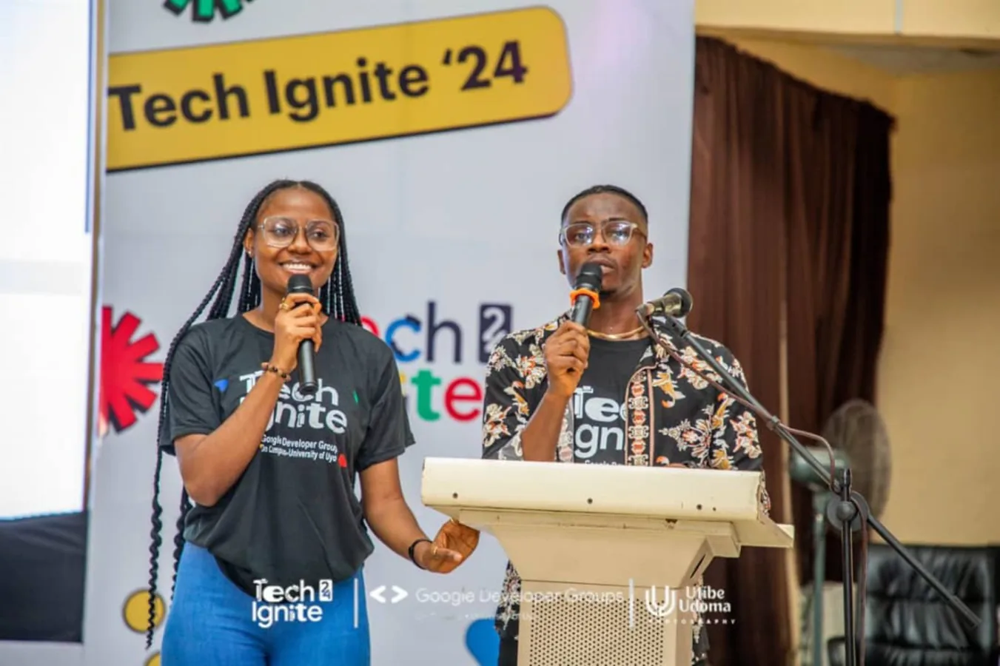
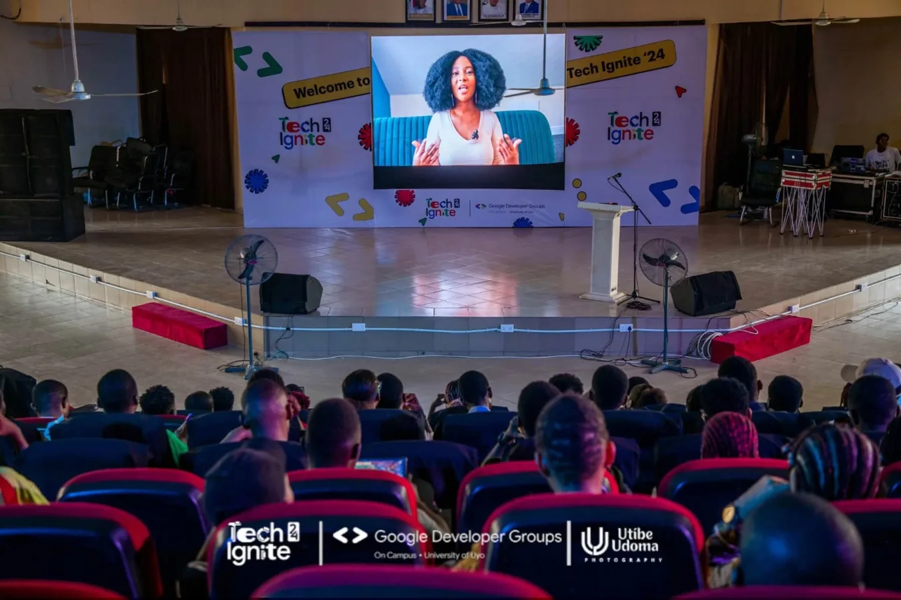

THE TECHFORGE
ARENA
High-impact keynotes, provocative industry conversations and ideas built for the next decade.
LEADERSHIP & FUTURE SYSTEMS ↗
TECHNOLOGY TALENT INDUSTRY INNOVATION
Two days. Eight technology frontiers. One extraordinary meeting point for the people, ideas and partnerships shaping Africa’s digital future.
01 / THE IDEA
TECHFORGE 2027 is where emerging builders meet the people and organisations moving technology forward.
Taking place in Uyo, Akwa Ibom State, the two-day experience combines technology leadership conversations, live technical experiences, demonstrations, innovation showcases and meaningful industry networking.
Our ambition is simple: move beyond inspiration into practical collaboration, visibility for local talent, and pathways for future workforce development.
02 / THE EXPERIENCE
CURATED FOR BUILDERS & DECISION-MAKERSDistinctive formats built to start conversations, spark demonstrations and make technology tangible.
High-impact keynotes, provocative industry conversations and ideas built for the next decade.
Practical demonstrations, technical sessions and real-world engineering challenges.
Conversations with the people designing platforms, products and future industries.
Working prototypes, emerging products and standout projects on display.
Intentional networking between companies, innovators, institutions and talent.
03 / THE FRONTIERS
THE TECHNOLOGIES SHAPING WHAT COMES NEXTScalable digital products and dependable integrations.
Intelligent products and responsible machine learning.
Secure systems, cyber resilience and digital trust.
Reliable infrastructure, deployment and automation.
Transforming data into meaningful decisions.
Useful mobile products built for real African contexts.
Transaction systems, quality and application reliability.
Connected devices, embedded systems and makers.
04 / TWO DAYS, ONE EXPERIENCE
PROPOSED PROGRAMME · SUBJECT TO CONFIRMATIONStructured to balance big ideas, technical depth and the conversations that unlock partnerships.
Check-in, exhibitor experiences and introductions.
Technology, talent and the systems shaping tomorrow.
Trust, payments, cybersecurity and platform reliability.
APIs, cloud infrastructure and technical demonstration formats.
Product discovery, prototype showcases and curated conversations.
Hands-on engineering, live showcases and participant discovery.
Industry perspectives on practical capability and talent needs.
Applied ideas, feedback and presentation of practical outcomes.
Projects, makers and emerging solutions on display.
Introducing post-conference partnerships and AKWAFORGE 1000.
05 / THE PEOPLE BEHIND THE VISION
RELEVANT ORGANISING EXPERIENCEOur leadership brings experience from developer communities, practical technology engagement and live event organisation.



The experience behind TECHFORGE. Edidiong Samuel, Managing Director of Affidex Academy Ltd, brings experience in the GDG on Campus University of Uyo ecosystem. The images shown are from Tech Ignite 2024, an independently organised GDG event; they illustrate relevant team experience, not an Affidex-hosted past edition.
PHOTO CREDITS: TECH IGNITE ’24 / GDG ON CAMPUS, UNIVERSITY OF UYO · UTIBE UDOMA PHOTOGRAPHY
06 / PARTNER WITH TECHFORGE
BUILT FOR BRAND VALUE & MEANINGFUL PARTICIPATIONMeet the next generation of talent. Demonstrate your technology leadership. Be part of the conversations shaping what comes next.
Visibility among emerging talent, executives and technology communities.
Curated conversations, product showcases and technical experiences.
Create relevant relationships and explore sustained industry partnerships.
01 / PREMIUM PARTNER
ONE AVAILABLE
02 / SECTOR ACTIVATION
TWO AVAILABLE
03 / PRODUCT & ENGAGEMENT
THREE AVAILABLE
04 / COMMUNITY & ECOSYSTEM
FOUR AVAILABLE
Explore the event vision, curated experiences and partner opportunities.
07 / BEYOND THE EVENT
JANUARY TO MAY 2027TECHFORGE 2027 is designed as a catalyst. The conversations and technical experiences of January can open doors to a sustained talent development initiative.
Explore long-term partnerships ↗A proposed 12-week, industry-supported accelerator targeting selected trainees across eight advanced technology pathways.
08 / THE ESSENTIALS
Details worth knowing before the conversation begins.
Thursday 28 to Friday 29 January 2027 in Uyo, Akwa Ibom State, Nigeria. The exact venue will be announced once confirmed.
Yes. Relevant technology experiences can be shaped with participating partners through agreed activation and branding arrangements. No individual experience is pre-assigned to any company.
The programme shown is indicative. Speaker, venue and schedule announcements will follow confirmation.
No. TECHFORGE 2027 sponsorships cover the two-day event. Additional support for the proposed March–May 2027 training accelerator would be negotiated separately.
Public registration and exhibitor booking details will be announced once the venue and delivery arrangements are confirmed. Organisations can request updates using the contact section below.
09 / LET'S BUILD
For sponsorship, exhibition, speaker and institutional partnership enquiries, connect directly with the organising team.
Tell us what kind of engagement your organisation is interested in.